使用手册 · 界面说明 · 示例与常见问题
彩色文本生成器是一个 Windows 桌面文本工具：左侧是编辑区，右侧是「工作台」，把颜色、样式、图片、翻译、AI 等能力集中在一起。
RichTextGen-Setup.exe，按向导装到当前用户目录（不需要管理员权限）；免安装版解压 RichTextGen-Portable.zip 后直接运行 彩色文本生成器.exe。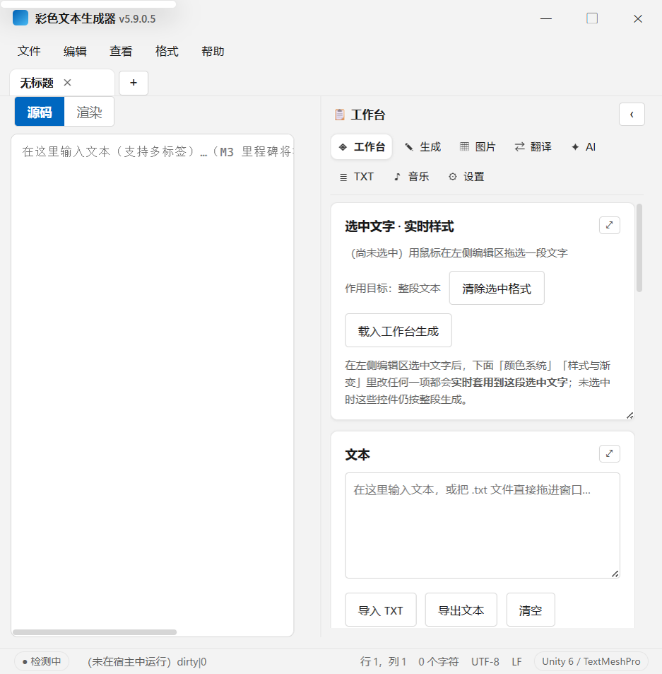
| 区域 | 作用 |
|---|---|
| 标题栏 | 显示版本，右侧是最小化 / 最大化 / 关闭。拖动空白处可移动窗口。 |
| 菜单栏 | 文件、编辑、查看、格式、帮助五组菜单。 |
| 标签栏 | 每个标签是一份文档；+ 新建；标签可拖动到窗口外拆分。 |
| 编辑器 | 上方「源码 / 渲染」切换：源码显示原始标签文本，渲染按标签实时显示样式。 |
| 工作台 | 颜色、样式、生成、图片、翻译、AI、TXT、音乐、设置等能力集中在这里。 |
| 状态栏 | 网络状态、提示信息、光标行列、字符数、编码与换行符。 |
工作台顶部的功能入口（工作台 / 生成 / 图片 / 翻译 / AI / TXT / 音乐 / 设置）可以按习惯换位置。
打开 工作台 → ⚙ 设置 → 外观 → 工作台功能栏，三选一：
| 方式 | 效果 | 适合 |
|---|---|---|
| 并入菜单栏 | 功能入口排在「文件 编辑 查看 格式 帮助」同一行的右侧 | 喜欢一切集中在顶部一行的人 |
| 顶部横排 | 功能入口横排在工作台内容上方 | 默认，左右分栏最直观 |
| 左侧竖排 | 功能入口竖排在左侧，内容在右 | 习惯传统侧边导航的人 |
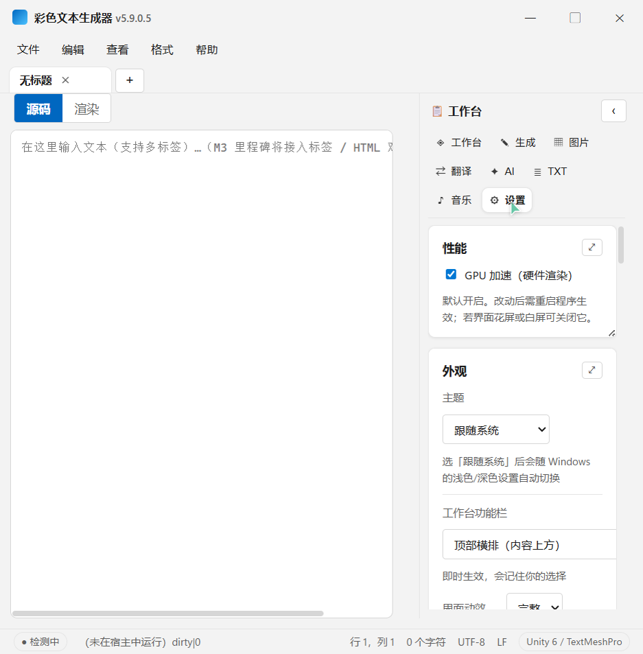
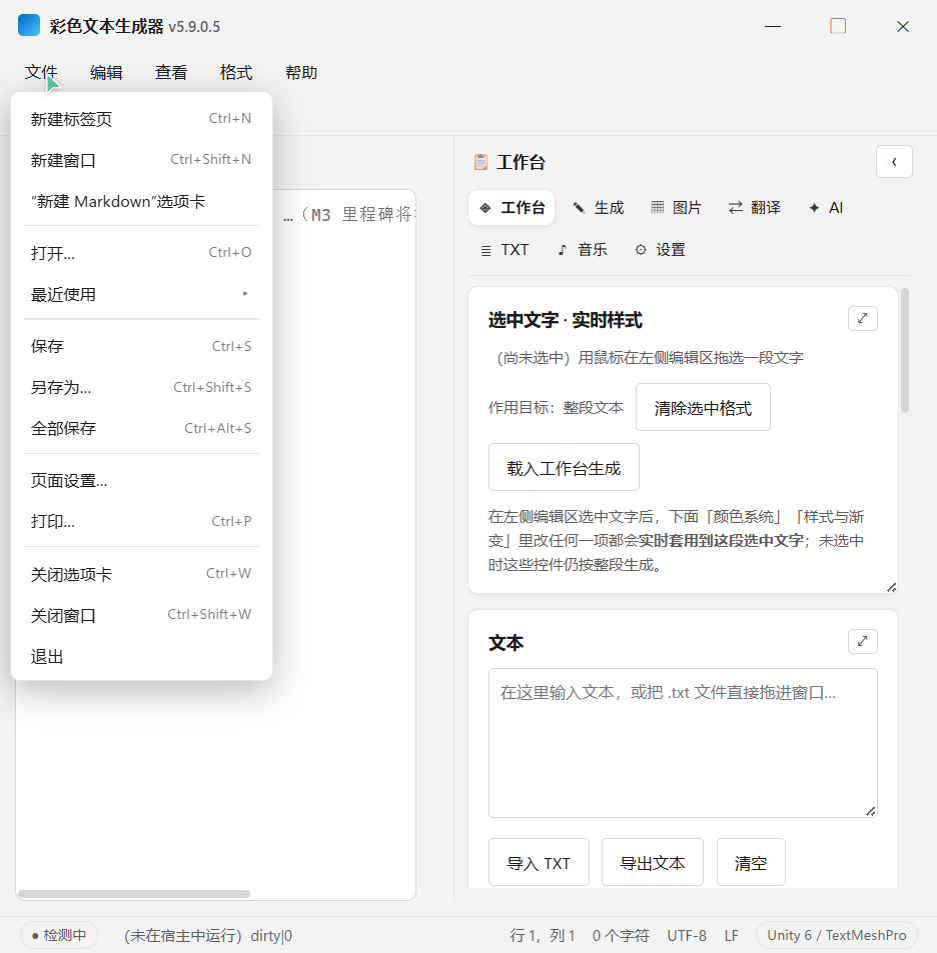
.md 标签并预填标题骨架。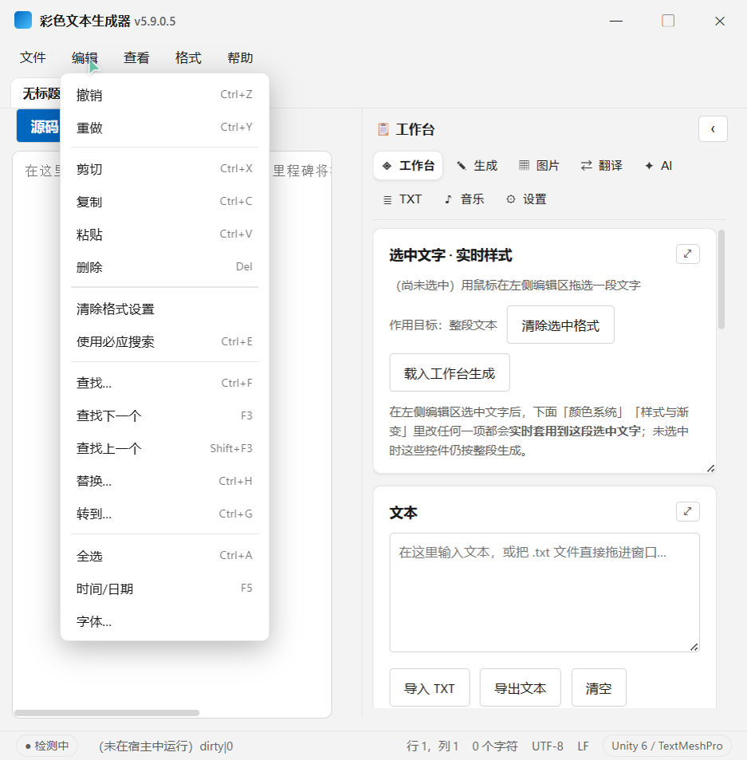
2026-10-24 22:02:23 这样的时间。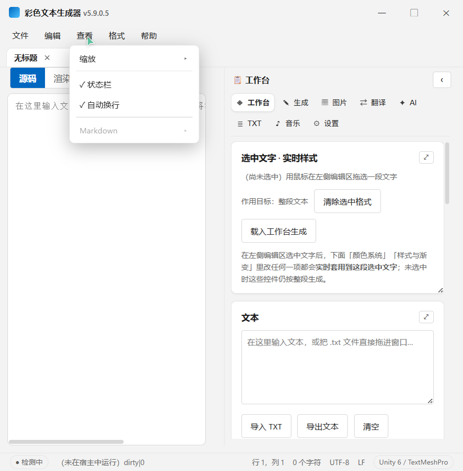
编辑器上方有两个按钮：
<color=#FF6B81> 这类标签。要精确改标签、做替换，用这个模式。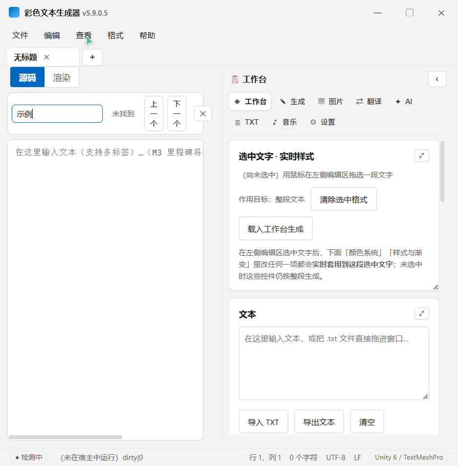
Ctrl+F 查找，Ctrl+H 替换，Ctrl+G 转到行号。F3 / Shift+F3 跳到下一个 / 上一个匹配。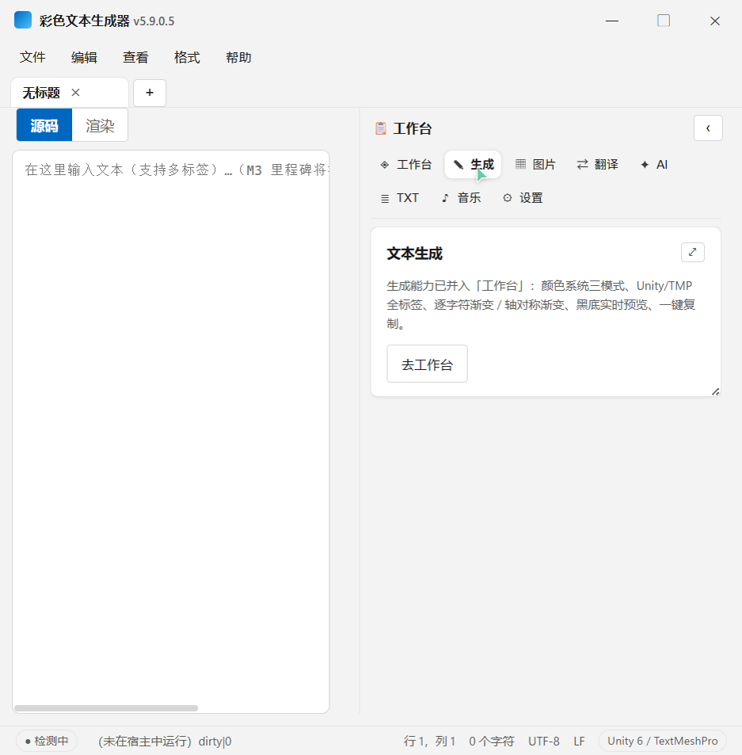
「生成」页是一个入口提示，真正的颜色与样式生成在工作台主页完成：选颜色 → 套到选区，或按行批量上色。
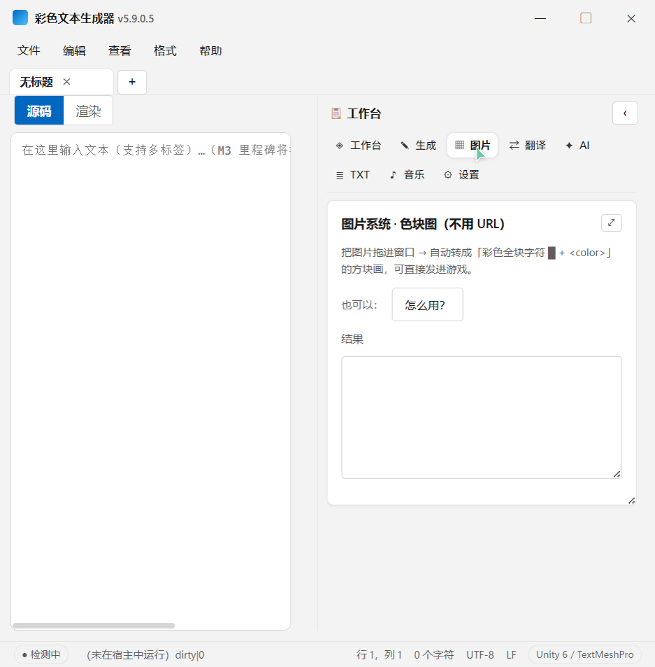
把图片直接拖进窗口，或在面板里选择图片，程序会把像素转成彩色方块字符并带上 <color> 标签，适合做头像、logo 的文本化版本。
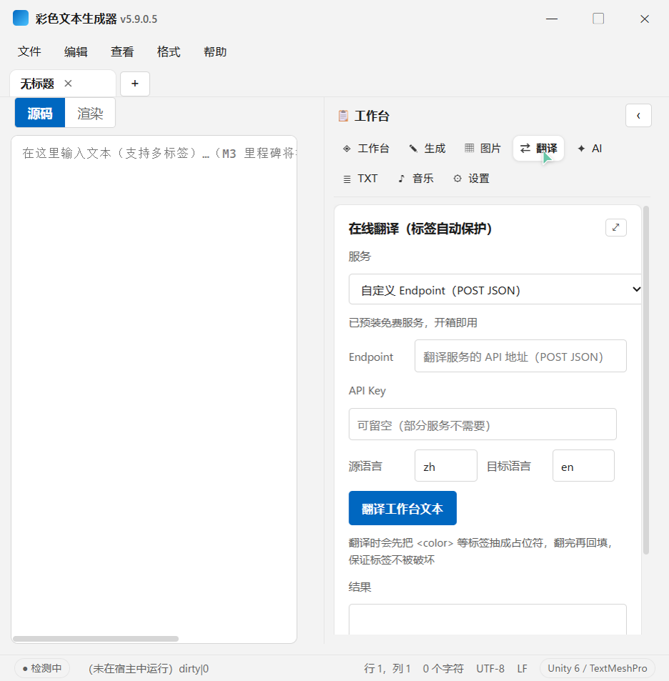
<color> 等标签会被保护，不会被翻坏。点「AI」会打开独立的对话窗口：左侧是任务列表，底部输入框可选模型、思考强度与联网搜索。窗口独立存在，可以一边看文档一边对话。首次使用需要在设置里填写模型服务与密钥。
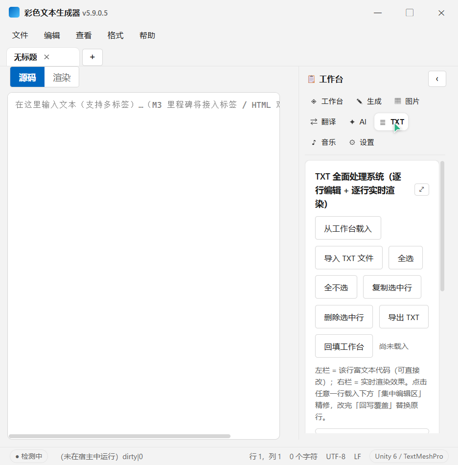
把长文本拆成一行一条，适合批量给每行上色、批量加前缀后缀。按钮包括：从工作台载入、导入 TXT、全选 / 全不选、复制选中行、导出 TXT、回填工作台。
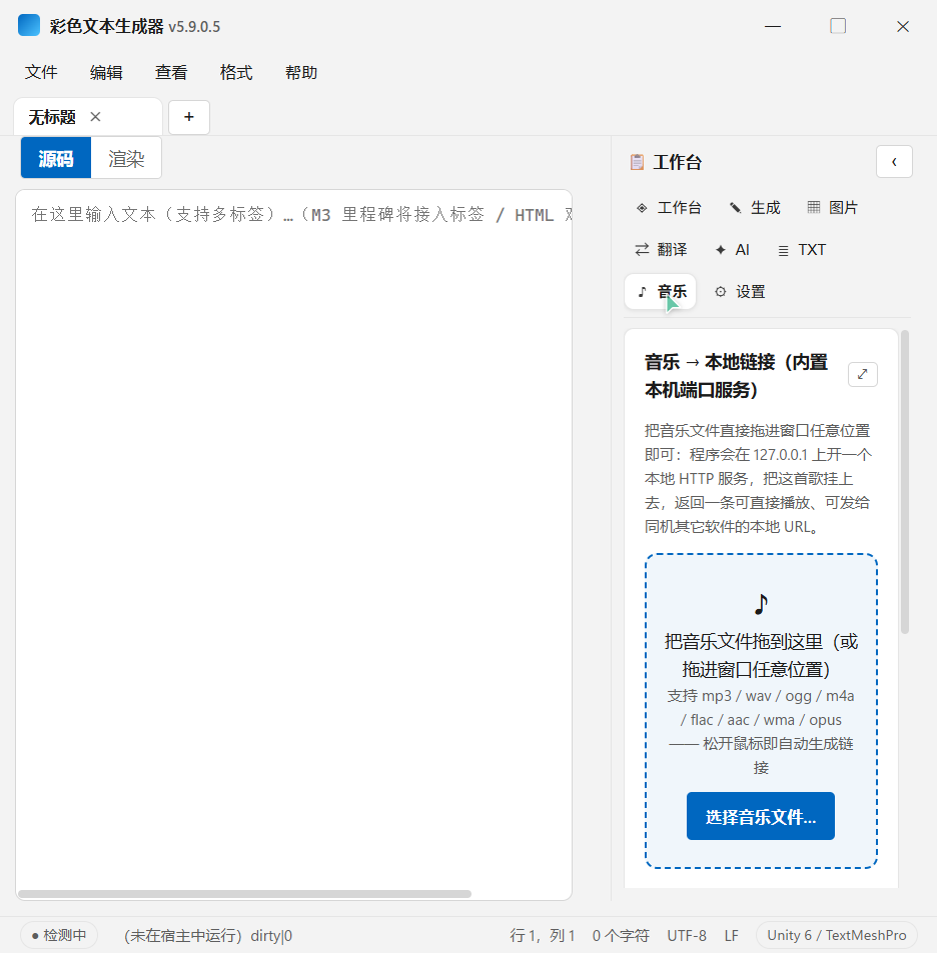
支持 mp3 / wav / ogg / m4a / flac / aac / wma / opus。拖入后程序会在本机起一个只读端口，生成一个可直接放进播放器或网页的链接；程序关闭后链接失效。
| 项目 | 说明 |
|---|---|
| GPU 加速 | 默认开启硬件光栅化与零拷贝，滚动、动效与画面更顺滑。修改后需重启程序生效；若出现花屏或白屏可关闭它。 |
| 主题 | 跟随系统 / 亮色 / 深色。 |
| 工作台功能栏 | 并入菜单栏 / 顶部横排 / 左侧竖排。 |
| 界面动效 | 完整 / 精简 / 关闭。完整包含菜单淡入、标签滑入、拖动气泡等。 |
| 背景水印 | 可启用本机图片作为半透明背景，调透明度、模糊与铺满方式。 |
| 关闭行为 | 点 ✕ 或 Alt+F4 时最小化到后台还是直接退出，可勾选记住。 |
文本使用 Unity / TextMesh Pro 风格的标签。最简单的上色方式是用工作台点颜色；也可以直接手写：
渲染后就是：
| 写法 | 效果 |
|---|---|
<color=#FF6B81>文字</color> | 指定颜色 |
<b>文字</b> | 加粗 |
<i>文字</i> | 斜体 |
<u>文字</u> | 下划线 |
<size=48>文字</size> | 指定字号 |
<color> 配 </color>）。在渲染模式下删除彩色文字时，建议先切回源码模式，避免把标签拆断。| 快捷键 | 作用 |
|---|---|
Ctrl+N / Ctrl+O / Ctrl+S | 新建 / 打开 / 保存 |
Ctrl+Shift+S / Ctrl+Alt+S | 另存为 / 全部保存 |
Ctrl+W / Ctrl+Shift+W | 关闭选项卡 / 关闭窗口 |
Ctrl+Shift+N | 新建窗口 |
Ctrl+F / Ctrl+H / Ctrl+G | 查找 / 替换 / 转到行 |
F3 / Shift+F3 | 下一个 / 上一个匹配 |
Ctrl+E | 用必应搜索选中文字 |
F5 | 插入时间/日期 |
Ctrl+加号 / Ctrl+减号 / Ctrl+0 | 放大 / 缩小 / 还原缩放 |
Ctrl+P | 打印 |
Ctrl+Shift+R | 切换源码 / 渲染模式 |
Ctrl+Z / Ctrl+Y | 撤销 / 重做 |
全局热键（隐藏窗口、导入、生成、退出、最小化、切换深浅色）可在「设置 → 快捷组件」里自定义。
安装版默认装到 %LOCALAPPDATA%\Programs\RichTextGen，只写当前用户注册表，全程不弹 UAC。安装过程也不会向系统证书存储写入任何证书。
certutil -hashfile 文件名 SHA256 比对；或改从 GitHub Releases 下载同一文件交叉核对。程序会同时探测 Cloudflare 下载站 与 GitHub 两条通道，哪条快用哪条；手动点「立即检测更新」默认走 Cloudflare；任一通道下载失败会自动换另一条。
本项目采用 MIT License，可自由使用、修改与分发，请保留版权声明与协议文本。
文档由项目的界面截图生成，随版本更新可能略有差异；以程序内实际界面为准。